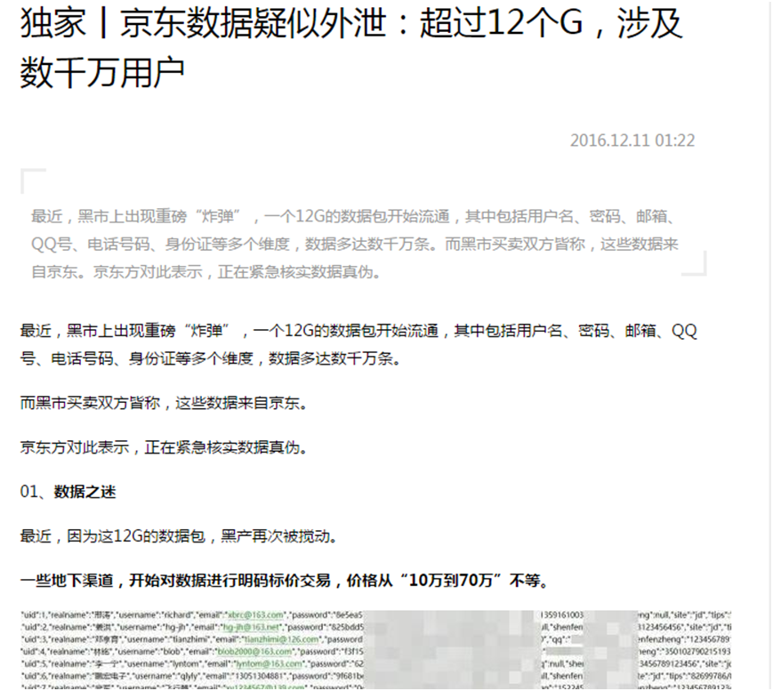
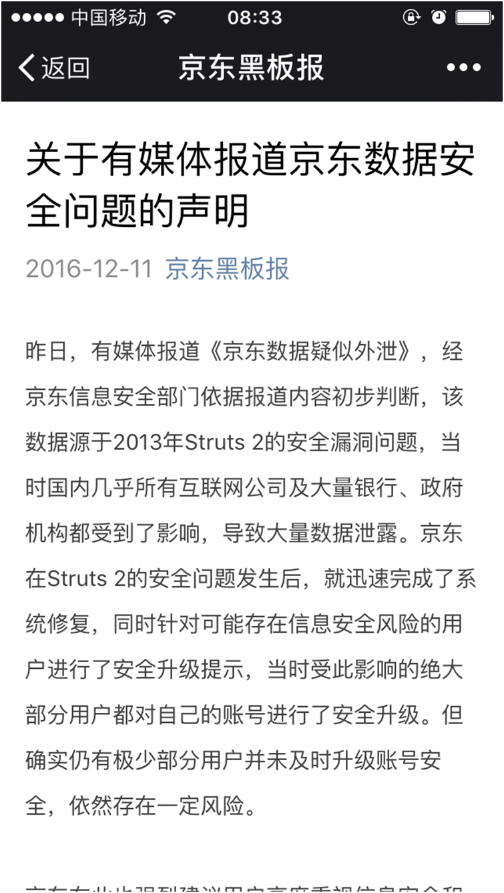
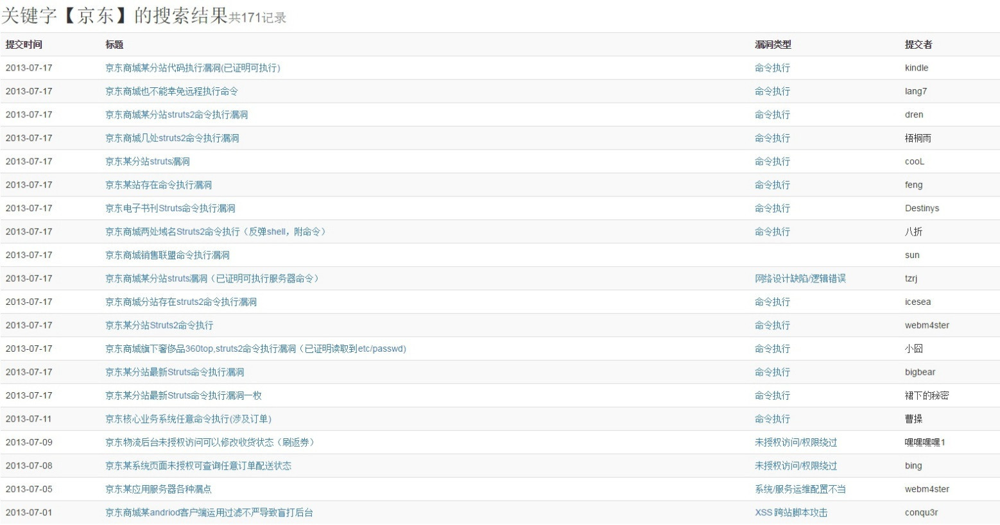
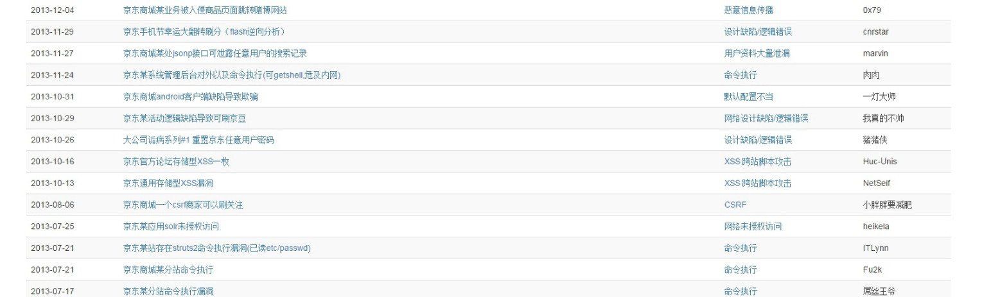
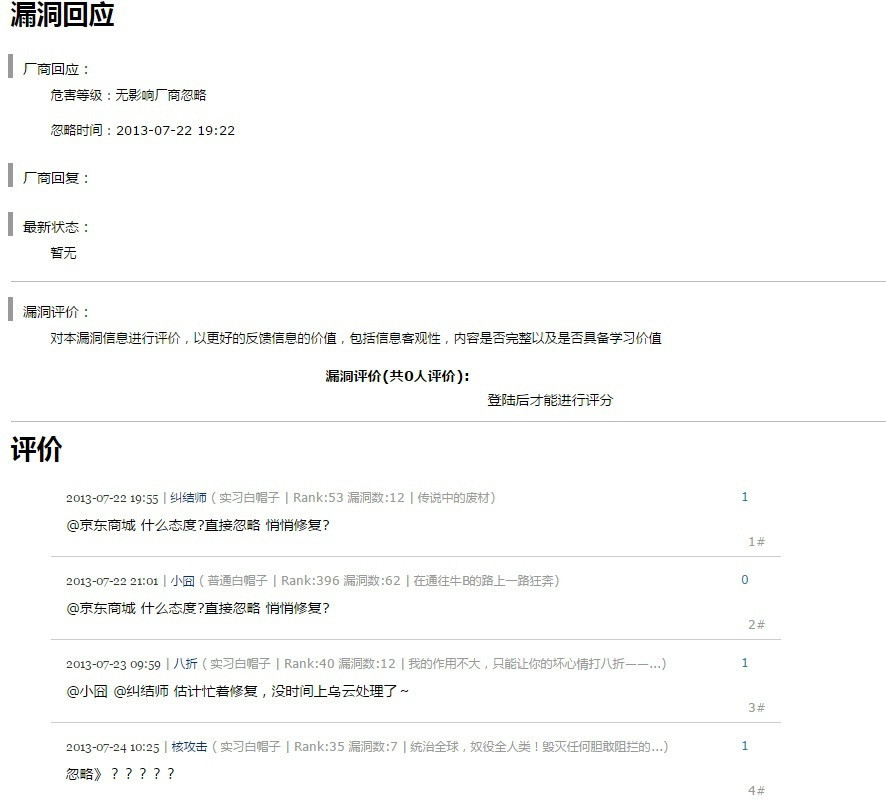
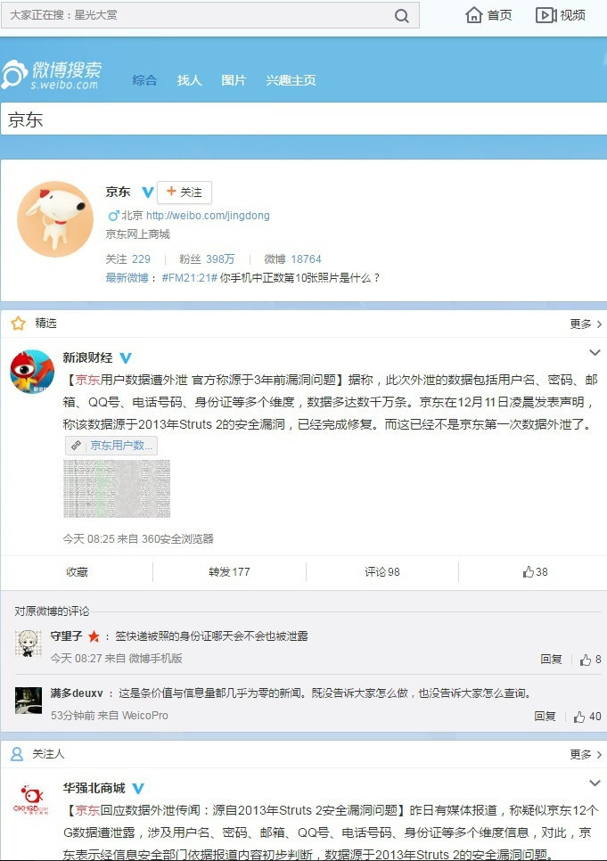
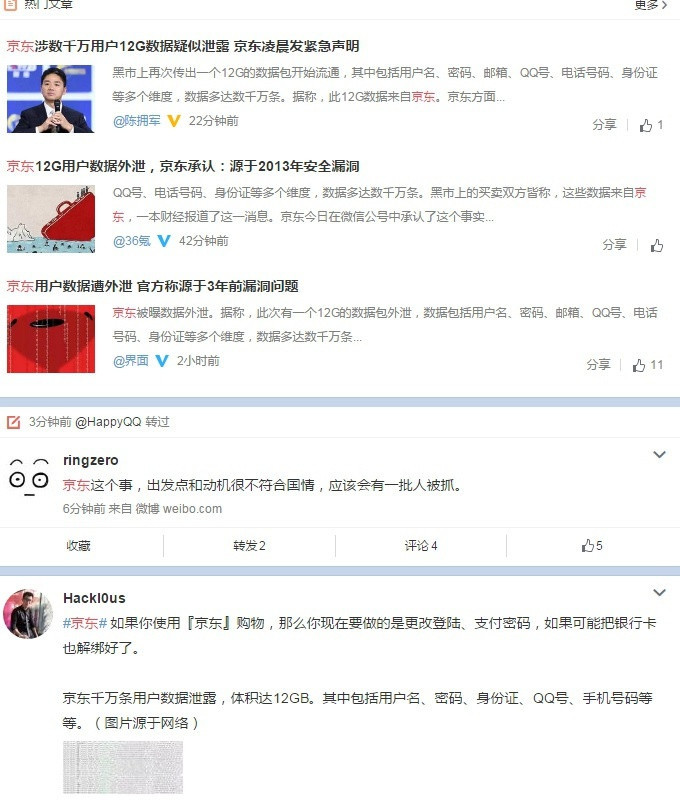
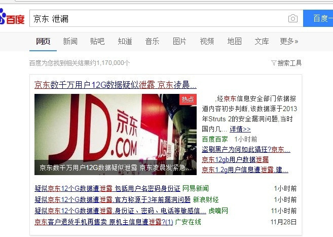

京东数据泄露事件
0x01本次事件的报道者是名为【一本财经】的微信公众号所发布

0x02事件“主角”京东方面于11日在其运营的【京东黑板报】微信公众号进行了申明，申明如下：

0x03官方回复是否属实？
通过相关检索，获取到乌云网镜像数据，从中搜索京东关键字定位到官方提到的Struts 2漏洞，如下：

Struts 2 的漏洞提交从7-17开始到24日逐渐结束，共经历了9天，其中京东对提交的漏洞统一回复为：

本次京东 泄漏事件 造成的影响:



0x04 对于京东用户导致的影响：
- 个人隐私信息泄漏，遭到骚扰或者勒索
- 个人财产可能被盗用、窃取
0x05 小疑问：
- 爆料者为何选择这么一个比较特殊的
年底,非工作日,双十二前夕日子发难？ - 哪里有泄漏的数据？
Ref:
该漏洞官方介绍地址：http://struts.apache.org/docs/s2-016.html
以下是 FreeBuf对3年前的漏洞相关文章http://www.freebuf.com/vuls/11220.html
FreeBuf对此事件的报道：http://www.freebuf.com/news/122524.html